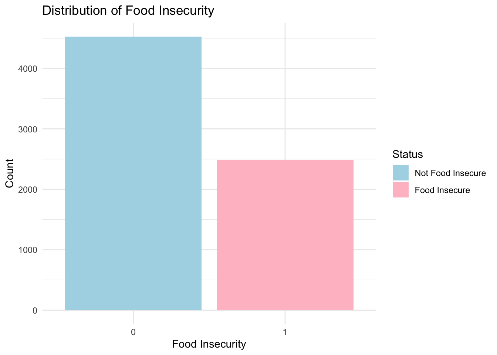

ds_final
2024-11-20
library(tidyverse)## ── Attaching core tidyverse packages ──────────────────────── tidyverse 2.0.0 ──
## ✔ dplyr 1.1.4 ✔ readr 2.1.5
## ✔ forcats 1.0.0 ✔ stringr 1.5.1
## ✔ ggplot2 3.5.1 ✔ tibble 3.2.1
## ✔ lubridate 1.9.3 ✔ tidyr 1.3.1
## ✔ purrr 1.0.2
## ── Conflicts ────────────────────────────────────────── tidyverse_conflicts() ──
## ✖ dplyr::filter() masks stats::filter()
## ✖ dplyr::lag() masks stats::lag()
## ℹ Use the conflicted package (<http://conflicted.r-lib.org/>) to force all conflicts to become errorslibrary(haven)
library(readxl)
library(plotly)##
## Attaching package: 'plotly'
##
## The following object is masked from 'package:ggplot2':
##
## last_plot
##
## The following object is masked from 'package:stats':
##
## filter
##
## The following object is masked from 'package:graphics':
##
## layoutlibrary(sf)## Linking to GEOS 3.11.0, GDAL 3.5.3, PROJ 9.1.0; sf_use_s2() is TRUElibrary(VGAM)## Loading required package: stats4
## Loading required package: splinesbrfss dataset
brfss_22 = read_csv("NYSDOH_BRFSS_Survey_Data_2022.csv")|>
janitor::clean_names()## Warning: One or more parsing issues, call `problems()` on your data frame for details,
## e.g.:
## dat <- vroom(...)
## problems(dat)## Rows: 17800 Columns: 343
## ── Column specification ────────────────────────────────────────────────────────
## Delimiter: ","
## chr (303): _STATE, IDATE, IMONTH, IDAY, RESPSLCT, SEXVAR, GENHLTH, PHYSHLTH,...
## dbl (38): FMONTH, IYEAR, SEQNO, _PSU, CELPHON1, COLGSEX1, NUMADULT, LANDSEX...
## lgl (2): CANHOWUSE_F, TELE_USE_F
##
## ℹ Use `spec()` to retrieve the full column specification for this data.
## ℹ Specify the column types or set `show_col_types = FALSE` to quiet this message.zipcode =
brfss_22 |>
filter(zipcode1 != "Data do not meet the criteria for statistical reliability, data quality or confidentiality (data are suppressed)")county =
brfss_22 |>
filter(ctycode2 != "Data do not meet the criteria for statistical reliability, data quality or confidentiality (data are suppressed)")subset dataset cleaning
cleaned_df =
brfss_22 |>
filter(complete.cases(imprace, educag, incomg1, strsmeal_sa, genhlth))|>
select(imprace, educag, incomg1, strsmeal_sa, genhlth)cleaned_df =
cleaned_df |>
mutate(
income = case_when(
incomg1 %in% c("Less than $15,000", "$25,000 to < $35,000", "$35,000 to < $50,000") ~"<50,000",
incomg1 == "$50,000 to < $100,000" ~ "50,000 ~ 100,000",
incomg1 %in% c ("$100,000 to < $200,000" , "$200,000 or more") ~ ">100,000",
TRUE ~ NA_character_),
education = case_when(
educag == "Did not graduate High School" ~ "Less than high school",
educag == "Graduated High School" ~ "High school or GED",
educag == "Attended College or Technical School" ~ "Some post-high school",
educag == "Graduated from College or Technical School" ~ "College graduate"
),
food_insecure = case_when(
strsmeal_sa %in% c("Rarely","Sometimes","Usually", "Always") ~ 1,
strsmeal_sa == "Never" ~ 0)
)|>
filter(!is.na(income), !is.na(education))|>
select(-incomg1, -educag, -strsmeal_sa)ggplot(data = cleaned_df, aes(x = imprace, fill = imprace))+
geom_bar() +
labs(
title = "Distribution of Race/Ethnicity",
x = "Race/Ethnicity",
y = "Count"
) +
theme_minimal() +
theme(axis.text.x = element_text(angle = 45, hjust = 1)) 
ggplot(cleaned_df, aes(x = "", fill = education)) +
geom_bar(width = 1, stat = "count") +
coord_polar(theta = "y") +
labs(
title = "Distribution of Education Levels",
fill = "Education Level"
) +
theme_void() +
theme(legend.position = "right")
ggplot(cleaned_df, aes(x = as.factor(food_insecure), fill = as.factor(food_insecure))) +
geom_bar() +
scale_fill_manual(values = c("0" = "lightblue", "1" = "pink"), labels = c("Not Food Insecure", "Food Insecure")) +
labs(
title = "Distribution of Food Insecurity",
x = "Food Insecurity",
y = "Count",
fill = "Status"
) +
theme_minimal()
cleaned_df =
cleaned_df |>
mutate(
imprace = as.factor(imprace),
income = as.factor(income),
education = as.factor(education),
genhlth = as.factor(genhlth)
)is income associated with food insecure?
logit_income =
glm(formula = food_insecure ~ income, data = cleaned_df, family = binomial)summary(logit_income)##
## Call:
## glm(formula = food_insecure ~ income, family = binomial, data = cleaned_df)
##
## Coefficients:
## Estimate Std. Error z value Pr(>|z|)
## (Intercept) 0.15825 0.04214 3.756 0.000173 ***
## income>100,000 -1.79779 0.07055 -25.484 < 2e-16 ***
## income50,000 ~ 100,000 -1.05163 0.06343 -16.580 < 2e-16 ***
## ---
## Signif. codes: 0 '***' 0.001 '**' 0.01 '*' 0.05 '.' 0.1 ' ' 1
##
## (Dispersion parameter for binomial family taken to be 1)
##
## Null deviance: 8531.8 on 6720 degrees of freedom
## Residual deviance: 7767.5 on 6718 degrees of freedom
## (14 observations deleted due to missingness)
## AIC: 7773.5
##
## Number of Fisher Scoring iterations: 4exp_income = exp(cbind(OR=coef(logit_income),confint(logit_income)))## Waiting for profiling to be done...print(exp_income)## OR 2.5 % 97.5 %
## (Intercept) 1.1714559 1.0786807 1.2724394
## income>100,000 0.1656645 0.1441346 0.1900589
## income50,000 ~ 100,000 0.3493678 0.3084065 0.3954708making confident interval
ci_income = as.data.frame(exp_income)
ci_income =
ci_income |>
rownames_to_column("Variable") |>
filter(Variable != "(Intercept)") ggplot(ci_income, aes(y = Variable, x = OR, xmin = `2.5 %`, xmax = `97.5 %`)) +
geom_pointrange() +
geom_vline(xintercept = 1, linetype = "dashed", color = "red") +
labs(
title = "Odds Ratios with 95% Confidence Intervals",
x = "Odds Ratio (OR)",
y = "Income Category"
) +
theme_minimal() +
theme(axis.text.y = element_text(size = 12))
is race associated with food insecure?
logit_race =
glm(food_insecure ~ imprace, data = cleaned_df, family = binomial)summary(logit_race)##
## Call:
## glm(formula = food_insecure ~ imprace, family = binomial, data = cleaned_df)
##
## Coefficients:
## Estimate Std. Error z value Pr(>|z|)
## (Intercept) 0.4700 0.3291 1.428 0.15330
## impraceAsian, Non-Hispanic -1.1448 0.3494 -3.277 0.00105 **
## impraceBlack, Non-Hispanic -0.6395 0.3388 -1.888 0.05907 .
## impraceHispanic -0.1845 0.3368 -0.548 0.58379
## impraceOther race, Non-Hispanic -0.8530 0.3817 -2.235 0.02544 *
## impraceWhite, Non-Hispanic -1.4665 0.3307 -4.434 9.25e-06 ***
## ---
## Signif. codes: 0 '***' 0.001 '**' 0.01 '*' 0.05 '.' 0.1 ' ' 1
##
## (Dispersion parameter for binomial family taken to be 1)
##
## Null deviance: 8531.8 on 6720 degrees of freedom
## Residual deviance: 8193.8 on 6715 degrees of freedom
## (14 observations deleted due to missingness)
## AIC: 8205.8
##
## Number of Fisher Scoring iterations: 4exp_race = exp(cbind(OR=coef(logit_race),confint(logit_race)))## Waiting for profiling to be done...print(exp_race)## OR 2.5 % 97.5 %
## (Intercept) 1.6000000 0.8482021 3.1174422
## impraceAsian, Non-Hispanic 0.3182870 0.1573729 0.6250436
## impraceBlack, Non-Hispanic 0.5275735 0.2660540 1.0145649
## impraceHispanic 0.8315217 0.4208835 1.5927584
## impraceOther race, Non-Hispanic 0.4261364 0.1982346 0.8920934
## impraceWhite, Non-Hispanic 0.2307309 0.1180762 0.4366356making CI
ci_race = as.data.frame(exp_race)
ci_race =
ci_race |>
rownames_to_column("Variable") |>
filter(Variable != "(Intercept)") ggplot(ci_race, aes(y = Variable, x = OR, xmin = `2.5 %`, xmax = `97.5 %`)) +
geom_pointrange() +
geom_vline(xintercept = 1, linetype = "dashed", color = "red") +
labs(
title = "Odds Ratios with 95% Confidence Intervals",
x = "Odds Ratio (OR)",
y = "Income Category"
) +
theme_minimal() +
theme(axis.text.y = element_text(size = 12))
is education associated with food insecure?
logit_edu =
glm(food_insecure ~ education, data = cleaned_df, family = binomial)summary(logit_edu)##
## Call:
## glm(formula = food_insecure ~ education, family = binomial, data = cleaned_df)
##
## Coefficients:
## Estimate Std. Error z value Pr(>|z|)
## (Intercept) -1.17472 0.03990 -29.44 <2e-16 ***
## educationHigh school or GED 0.89353 0.06799 13.14 <2e-16 ***
## educationLess than high school 1.65655 0.12013 13.79 <2e-16 ***
## educationSome post-high school 0.75108 0.06534 11.49 <2e-16 ***
## ---
## Signif. codes: 0 '***' 0.001 '**' 0.01 '*' 0.05 '.' 0.1 ' ' 1
##
## (Dispersion parameter for binomial family taken to be 1)
##
## Null deviance: 8531.8 on 6720 degrees of freedom
## Residual deviance: 8181.7 on 6717 degrees of freedom
## (14 observations deleted due to missingness)
## AIC: 8189.7
##
## Number of Fisher Scoring iterations: 4exp_edu = exp(cbind(OR=coef(logit_edu),confint(logit_edu)))## Waiting for profiling to be done...print(exp_edu)## OR 2.5 % 97.5 %
## (Intercept) 0.3089064 0.2855101 0.3338597
## educationHigh school or GED 2.4437471 2.1388216 2.7921872
## educationLess than high school 5.2412235 4.1483184 6.6458564
## educationSome post-high school 2.1192858 1.8644532 2.4088344making CI
ci_edu = as.data.frame(exp_edu)
ci_edu =
ci_edu |>
rownames_to_column("Variable") |>
filter(Variable != "(Intercept)") ggplot(ci_edu, aes(y = Variable, x = OR, xmin = `2.5 %`, xmax = `97.5 %`)) +
geom_pointrange() +
geom_vline(xintercept = 1, linetype = "dashed", color = "red") +
labs(
title = "Odds Ratios with 95% Confidence Intervals",
x = "Odds Ratio (OR)",
y = "Income Category"
) +
theme_minimal() +
theme(axis.text.y = element_text(size = 12))are race, education, and income associated with food insecure?
logit_all =
glm(food_insecure ~ education + income + imprace, data = cleaned_df, family = binomial)summary(logit_all)##
## Call:
## glm(formula = food_insecure ~ education + income + imprace, family = binomial,
## data = cleaned_df)
##
## Coefficients:
## Estimate Std. Error z value Pr(>|z|)
## (Intercept) 0.53189 0.35172 1.512 0.130472
## educationHigh school or GED 0.33709 0.07560 4.459 8.25e-06 ***
## educationLess than high school 0.51381 0.13410 3.832 0.000127 ***
## educationSome post-high school 0.39938 0.07067 5.652 1.59e-08 ***
## income>100,000 -1.47996 0.07716 -19.181 < 2e-16 ***
## income50,000 ~ 100,000 -0.82727 0.06720 -12.310 < 2e-16 ***
## impraceAsian, Non-Hispanic -0.61142 0.37016 -1.652 0.098582 .
## impraceBlack, Non-Hispanic -0.35711 0.35843 -0.996 0.319098
## impraceHispanic -0.02493 0.35628 -0.070 0.944225
## impraceOther race, Non-Hispanic -0.50427 0.40436 -1.247 0.212367
## impraceWhite, Non-Hispanic -0.95198 0.35036 -2.717 0.006584 **
## ---
## Signif. codes: 0 '***' 0.001 '**' 0.01 '*' 0.05 '.' 0.1 ' ' 1
##
## (Dispersion parameter for binomial family taken to be 1)
##
## Null deviance: 8531.8 on 6720 degrees of freedom
## Residual deviance: 7556.1 on 6710 degrees of freedom
## (14 observations deleted due to missingness)
## AIC: 7578.1
##
## Number of Fisher Scoring iterations: 4exp_all = exp(cbind(OR=coef(logit_all),confint(logit_all)))## Waiting for profiling to be done...print(exp_all)## OR 2.5 % 97.5 %
## (Intercept) 1.7021419 0.8647852 3.4657343
## educationHigh school or GED 1.4008627 1.2075946 1.6242264
## educationLess than high school 1.6716442 1.2863633 2.1766833
## educationSome post-high school 1.4909056 1.2977759 1.7120630
## income>100,000 0.2276472 0.1955464 0.2646223
## income50,000 ~ 100,000 0.4372422 0.3831784 0.4986752
## impraceAsian, Non-Hispanic 0.5425790 0.2575868 1.1083291
## impraceBlack, Non-Hispanic 0.6996939 0.3394655 1.3960468
## impraceHispanic 0.9753822 0.4750575 1.9375440
## impraceOther race, Non-Hispanic 0.6039454 0.2687842 1.3203476
## impraceWhite, Non-Hispanic 0.3859749 0.1900830 0.7577675making CI
ci_all = as.data.frame(exp_all)
ci_all =
ci_all |>
rownames_to_column("Variable") |>
filter(Variable != "(Intercept)") ggplot(ci_all, aes(y = Variable, x = OR, xmin = `2.5 %`, xmax = `97.5 %`)) +
geom_pointrange() +
geom_vline(xintercept = 1, linetype = "dashed", color = "red") +
labs(
title = "Odds Ratios with 95% Confidence Intervals",
x = "Odds Ratio (OR)",
y = "Income Category"
) +
theme_minimal() +
theme(axis.text.y = element_text(size = 12))
is food insecure associated with general health?
mlogit_health =
vglm(genhlth ~ food_insecure, data = cleaned_df, family = multinomial(refLevel = "Fair"))summary(mlogit_health)## Call:
## vglm(formula = genhlth ~ food_insecure, family = multinomial(refLevel = "Fair"),
## data = cleaned_df)
##
## Coefficients:
## Estimate Std. Error z value Pr(>|z|)
## (Intercept):1 -4.59512 0.50252 -9.144 < 2e-16 ***
## (Intercept):2 0.85806 0.05997 14.309 < 2e-16 ***
## (Intercept):3 1.17943 0.05746 20.526 < 2e-16 ***
## (Intercept):4 -1.62471 0.12388 -13.115 < 2e-16 ***
## (Intercept):5 -4.37198 0.45003 -9.715 < 2e-16 ***
## (Intercept):6 1.51023 0.05552 27.199 < 2e-16 ***
## food_insecure:1 -1.31568 1.12033 -1.174 0.24025
## food_insecure:2 -1.12341 0.09919 -11.325 < 2e-16 ***
## food_insecure:3 -0.40687 0.08522 -4.774 1.81e-06 ***
## food_insecure:4 0.46750 0.16333 2.862 0.00421 **
## food_insecure:5 -1.53882 1.09779 -1.402 0.16099
## food_insecure:6 -0.93792 0.08557 -10.961 < 2e-16 ***
## ---
## Signif. codes: 0 '***' 0.001 '**' 0.01 '*' 0.05 '.' 0.1 ' ' 1
##
## Number of linear predictors: 6
##
## Names of linear predictors: log(mu[,1]/mu[,3]), log(mu[,2]/mu[,3]),
## log(mu[,4]/mu[,3]), log(mu[,5]/mu[,3]), log(mu[,6]/mu[,3]), log(mu[,7]/mu[,3])
##
## Residual deviance: 18580.58 on 40314 degrees of freedom
##
## Log-likelihood: -9290.288 on 40314 degrees of freedom
##
## Number of Fisher scoring iterations: 9
##
## Warning: Hauck-Donner effect detected in the following estimate(s):
## '(Intercept):1', '(Intercept):5'
##
##
## Reference group is level 3 of the responseexp_health = exp(cbind(OR=coef(mlogit_health),confint(mlogit_health)))
print(exp_health)## OR 2.5 % 97.5 %
## (Intercept):1 0.01010101 0.003772419 0.02704641
## (Intercept):2 2.35858586 2.097048973 2.65274074
## (Intercept):3 3.25252525 2.906100626 3.64024577
## (Intercept):4 0.19696970 0.154509167 0.25109877
## (Intercept):5 0.01262626 0.005226491 0.03050278
## (Intercept):6 4.52777778 4.060902015 5.04832954
## food_insecure:1 0.26829268 0.029852690 2.41120527
## food_insecure:2 0.32516843 0.267715812 0.39495056
## food_insecure:3 0.66573246 0.563321566 0.78676149
## food_insecure:4 1.59599750 1.158793351 2.19815553
## food_insecure:5 0.21463415 0.024960941 1.84559617
## food_insecure:6 0.39144097 0.331001377 0.46291660coefs <- coef(summary(mlogit_health))
odds_ratios <- exp(coefs[, "Estimate"]) # Convert coefficients to odds ratios
lower_ci <- exp(coefs[, "Estimate"] - 1.96 * coefs[, "Std. Error"]) # Lower 95% CI
upper_ci <- exp(coefs[, "Estimate"] + 1.96 * coefs[, "Std. Error"]) # Upper 95% CI
# Combine into a tidy data frame
ci_data <- data.frame(
Variable = rownames(coefs),
OR = odds_ratios,
Lower = lower_ci,
Upper = upper_ci
) |>
filter(!grepl("(Intercept)", Variable)) |> # Exclude intercepts
separate(Variable, into = c("Outcome", "Predictor"), sep = ": ", fill = "right")ggplot(ci_data, aes(y = Outcome, x = OR, xmin = Lower, xmax = Upper, color = Predictor)) +
geom_pointrange() +
geom_vline(xintercept = 1, linetype = "dashed", color = "red") +
labs(
title = "Odds Ratios with 95% Confidence Intervals",
x = "Odds Ratio (OR)",
y = "Outcome (General Health)",
color = "Predictor"
) +
theme_minimal() +
theme(axis.text.y = element_text(size = 12))